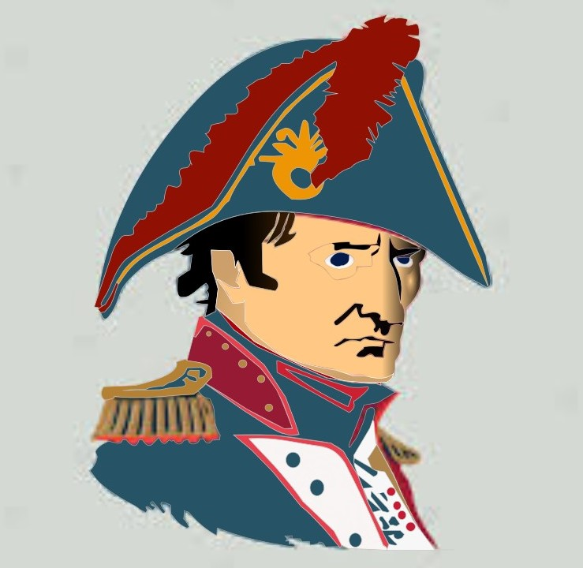

NAPOLEON BONAPARTE
Legado
El legado de Napoleón Bonaparte es vasto y abarca múltiples áreas que han dejado una huella indeleble en la historia de Europa y el mundo.
Aquí está un análisis detallado de su legado en diferentes campos:
Política y Gobierno:
- Napoleón revolucionó la política europea al establecer un sistema de gobierno centralizado y eficiente en Francia durante su mandato como Primer Cónsul y Emperador. Sus reformas administrativas modernizaron el estado, creando una burocracia más eficiente y centralizada.
- La creación de la Confederación del Rin y la expansión del Imperio Francés influyeron en la configuración política de Europa, sentando las bases para la unificación de algunos estados y la fragmentación de otros.
- Su enfoque en el mérito y la competencia para los cargos públicos tuvo un impacto duradero en el sistema de reclutamiento gubernamental.
Derecho y Legislación:
- El Código Napoleónico, promulgado en 1804, unificó las leyes civiles en Francia y estableció principios legales fundamentales que influyeron en muchos sistemas legales modernos en todo el mundo. Su énfasis en la igualdad ante la ley y la propiedad privada sigue siendo relevante en el derecho contemporáneo.
- El código también introdujo reformas en áreas como el derecho de familia, la propiedad y las obligaciones contractuales, sentando las bases para un sistema legal más justo y uniforme.
Cultura y Educación:
- Napoleón fue un mecenas de las artes y las ciencias, promoviendo la educación y el progreso cultural durante su gobierno. Fundó instituciones educativas, museos y bibliotecas, fomentando el desarrollo intelectual y artístico.
- Su apoyo a la arqueología y la preservación del patrimonio cultural condujo a importantes descubrimientos y la preservación de monumentos históricos en toda Europa.
Innovaciones Militares:
- Las tácticas y estrategias militares de Napoleón, como la maniobra envolvente y el uso coordinado de la artillería y la infantería, influyeron en la teoría militar moderna. Su énfasis en la movilidad y la velocidad en el campo de batalla cambió la forma en que se hacía la guerra en Europa.
- El establecimiento de la Legión de Honor y otras condecoraciones militares recompensó el valor y el servicio, estableciendo un sistema de reconocimiento que se ha mantenido en muchas fuerzas armadas hasta hoy.
Impacto en la Europa Moderna:
- La influencia de Napoleón se extiende hasta la Europa moderna, donde su legado aún se debate y se analiza en el contexto de la integración europea y el desarrollo de las instituciones políticas y legales.
- Su ascenso al poder y sus campañas militares también han sido objeto de estudio en el ámbito de la estrategia política y militar, proporcionando lecciones importantes sobre liderazgo, diplomacia y conflictos internacionales.
